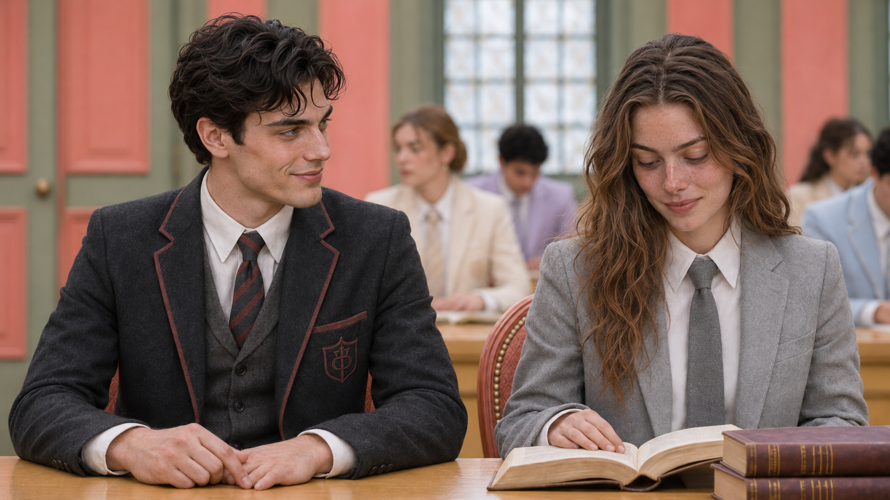

11B · He smiles, she looks down
Back to storyboardAll stills · 01 · 02 · 03 · 04 · 05 · 07 · 08 · 09 · 10 · 11 · 11A · 11B · 12

Inputs


Full still prompt · gpt-image-2.6
Create a single new photographic 16:9 still: a MEDIUM CLOSE-UP TWO-SHOT of Cassius and Linney sitting side by side at the right front desk of the pastel classroom, camera in front of the desk at seated eye level, about a 50mm lens, shallow depth of field. Image 1 (the wide, he sits) controls geography and seating: Cassius sits in the inner seat on FRAME LEFT, Linney in the outer seat on FRAME RIGHT, both behind the same honey-yellow desk, coral chairs, her open old book and two plum-brown books on the desk in front of her. Image 2 controls Cassius exactly: grey-green eyes, dark tousled hair, charcoal blazer with dusty-red piping and crest, grey waistcoat, white shirt, dark tie. Image 3 controls Linney exactly: freckled adult face, blue eyes, long tousled brown hair, plain light-grey blazer with no crest, white shirt, grey tie. Image 4 controls the room behind them: salmon wall panels, sage trim, leaded window light, soft pastel-uniformed students blurred at the desks behind. ACTING: Cassius is turned slightly toward Linney with a small, warm, genuine smile, looking at her. Linney has just glanced at him and now looks DOWN at her open book, shy, a faint flush, the corner of her mouth almost smiling, her hand resting on the page. Framed from mid-chest up, both faces clearly visible, Cassius on frame left, Linney on frame right. Soft daylight. Smooth clean photographic finish, no grain, no text, no watermark. Exactly two people in focus; natural anatomy.
Video: MAGI-2 select S11B.mp4 (take 2; take 1 had a painted-on blush from the prompt).